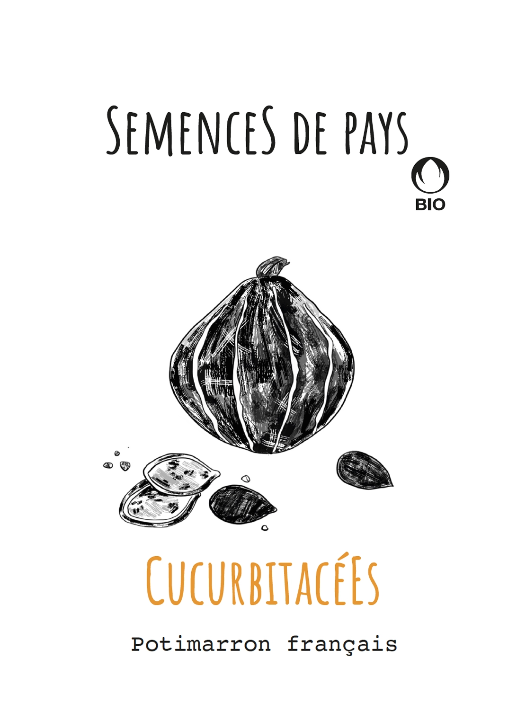
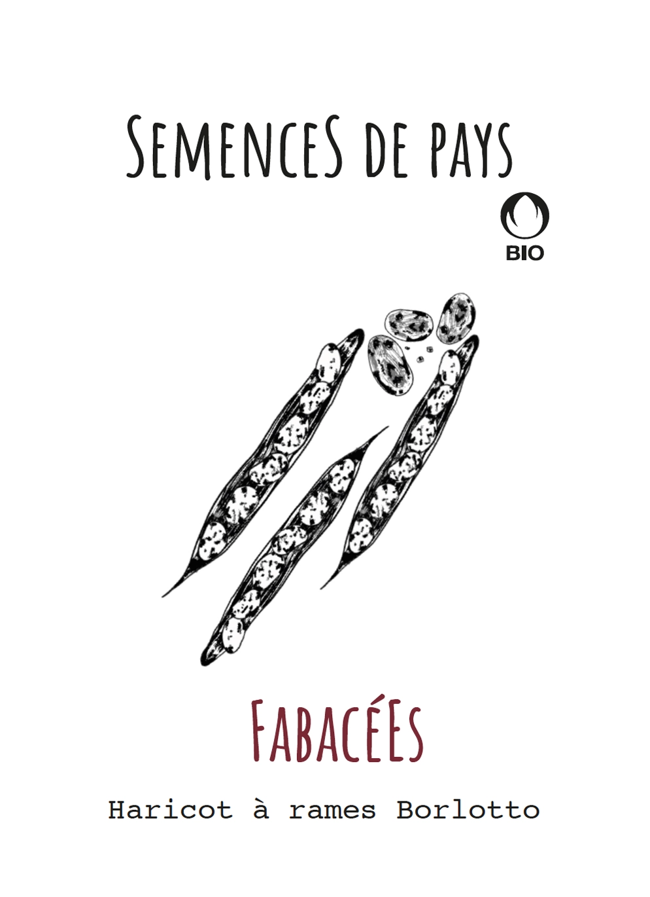
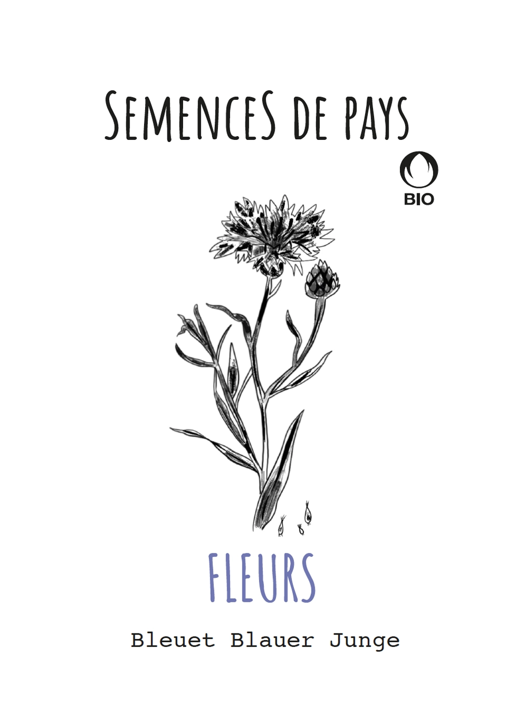

Nos semences



NOS SEMENCES SONT CERTIFIÉS BIOSUISSE NOS SEMENCES SONT CERTIFIÉS BIOSUISSE NOS SEMENCES SONT CERTIFIÉS BIOSUISSE
Semences de pays développe une production de semences reproductibles, rustiques et adaptés à une agriculture biologique proche des cycles de la nature, en collaboration avec les initiatives nourricières de proximité.

Rue des Rois 17
1204 Genève
Avenue William-Fraisse 9
1006 Lausanne
Chemin des Philosophes 15
1350 Orbe
Routes des Mines de Sel
1880 Bex